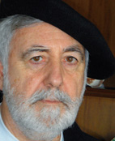

Colaboradores
 Llorenç Allès Camps. Nacido en Ferreries en el año 1979, reside en Ciutadella desde 2007. Periodista, con experiencia en prensa, radio y televisión. Actualmente es redactor del Diario Menorca.
Llorenç Allès Camps. Nacido en Ferreries en el año 1979, reside en Ciutadella desde 2007. Periodista, con experiencia en prensa, radio y televisión. Actualmente es redactor del Diario Menorca.
 Cristòfol Barber Villalonga. (Es Mercadal, 1978). Es historiador y trabaja como archivero y bibliotecario. Ha publicado diversas obras de temática local, siendo coautor de "Històries des Mercadal, 101 testimonis en primera persona".
Cristòfol Barber Villalonga. (Es Mercadal, 1978). Es historiador y trabaja como archivero y bibliotecario. Ha publicado diversas obras de temática local, siendo coautor de "Històries des Mercadal, 101 testimonis en primera persona".
Pedro J. Bosch. Médico oftalmólogo, periodista y escritor. Ha sido el Jefe del Servicio de Oftalmologia del hospital Monte Toro y Presidente del Ateneu de Maó. Ha publicado 5 novelas y 4 libros de artículos y ensayos. Colaborador del Diario Menorca y El País.
Pau Faner. Escritor, ha publicado treinta y tantos libros y ha obtenido alguno de los mejores premios de narrativa en catalán y castellano, también se dedica a la pintura.
 Joana Gual. Licenciada con grado en Historia por la UIB. Postgrado en gestión de patrimonio arqueológico por la UOC. Técnica del Servicio de Patrimonio histórico del Consell Insular de Menorca.
Joana Gual. Licenciada con grado en Historia por la UIB. Postgrado en gestión de patrimonio arqueológico por la UOC. Técnica del Servicio de Patrimonio histórico del Consell Insular de Menorca.
 Juan Juanico Petrus. Técnico de Empresas y Actividades Turísticas, Consultor Medioambiental y MBA en Contabilidad General y Análisis Económico-Financiero.
Juan Juanico Petrus. Técnico de Empresas y Actividades Turísticas, Consultor Medioambiental y MBA en Contabilidad General y Análisis Económico-Financiero.
 Miquel Àngel Limón Pons. Nacido en Alaior, es doctor en Periodismo y miembro numerario del IME (Institut Menorquí d'Estudis).
Miquel Àngel Limón Pons. Nacido en Alaior, es doctor en Periodismo y miembro numerario del IME (Institut Menorquí d'Estudis).
 Miquel Àngel Marquès. Licenciado en Historia. Trabaja de archivero y en su tiempo libre realiza labores de búsqueda sobre la historia, cultura y patrimonio cultural de Menorca, con la intención de darle difusión.
Miquel Àngel Marquès. Licenciado en Historia. Trabaja de archivero y en su tiempo libre realiza labores de búsqueda sobre la historia, cultura y patrimonio cultural de Menorca, con la intención de darle difusión.
 Xavier Martin. Profesor de Filosofia en el IES Cap de Llevant de Maó y miembro del Institut Menorquí d'Estudis (IME). Ha publicado diferentes libros y artículos de temática menorquina, especialmente sobre teatro antiguo de Menorca.
Xavier Martin. Profesor de Filosofia en el IES Cap de Llevant de Maó y miembro del Institut Menorquí d'Estudis (IME). Ha publicado diferentes libros y artículos de temática menorquina, especialmente sobre teatro antiguo de Menorca.
 Pere Riudavets i Fayas. Diplomado en Magisterio y Licenciado en Filosofia. Maestro de Escuela en el CEIP Francesc d'Albranca des Migjorn Gran. Le gusta leer, escribir, dar clase, conversar y caminar.
Pere Riudavets i Fayas. Diplomado en Magisterio y Licenciado en Filosofia. Maestro de Escuela en el CEIP Francesc d'Albranca des Migjorn Gran. Le gusta leer, escribir, dar clase, conversar y caminar.
 Natàlia Sans Rosselló. Licenciada en Geografía e Historia, maestra en educación musical e investigadora de la cultura tradicional. Apasionada por las historias de la vida.
Natàlia Sans Rosselló. Licenciada en Geografía e Historia, maestra en educación musical e investigadora de la cultura tradicional. Apasionada por las historias de la vida.
 Adolf Sintes. Investigador de la antropologia de Menorca. Autor de varios libros y colaborador habitual en diversos medios de comunicación. Miembro del IME.
Adolf Sintes. Investigador de la antropologia de Menorca. Autor de varios libros y colaborador habitual en diversos medios de comunicación. Miembro del IME.